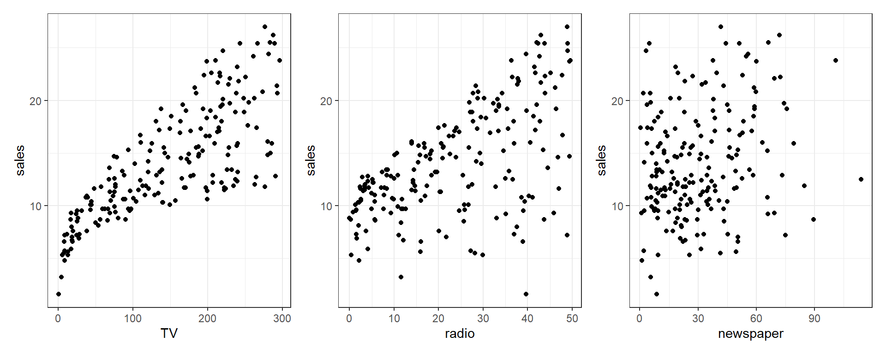
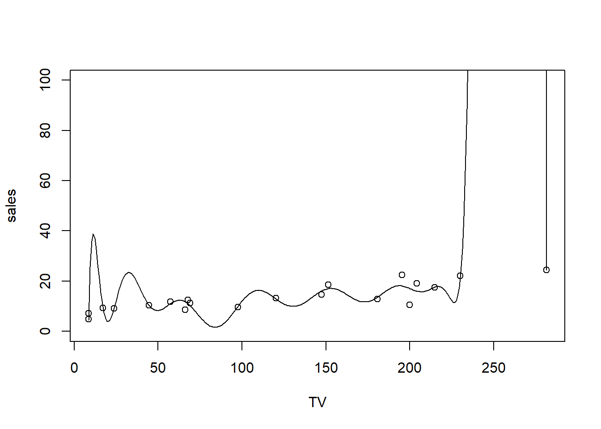
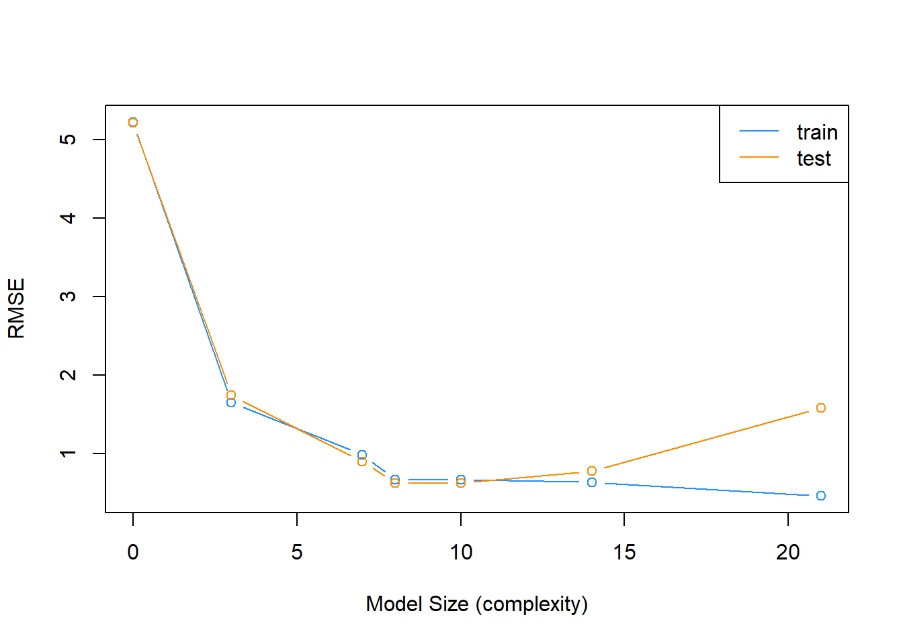
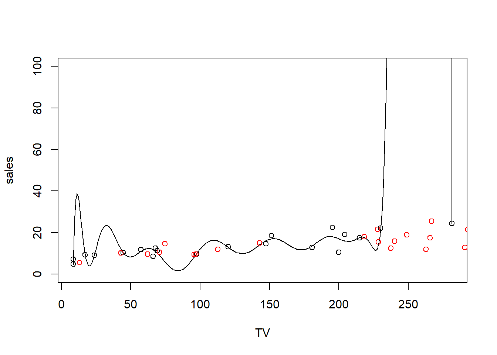

Model Selection in Linear Regression
Model Selection
Often when we are developing a linear regression model, part of our goal is to explain a relationship. Now, we will ignore much of what we have learned and instead simply use regression as a tool to predict. Instead of a model which explains relationships, we seek a model which minimizes errors.
First, note that a linear model is one of many methods used in regression.
To discuss linear models in the context of prediction, we introduce the (very boring) Advertising data that is discussed in the ISL text (see supplemental readings). It can be found at https://www.statlearning.com/s/Advertising.csv.
Advertising <- read_csv('https://www.statlearning.com/s/Advertising.csv')
Advertising = Advertising %>%
dplyr::select(TV, radio, newspaper, sales)
Advertising# A tibble: 200 × 4
TV radio newspaper sales
<dbl> <dbl> <dbl> <dbl>
1 230. 37.8 69.2 22.1
2 44.5 39.3 45.1 10.4
3 17.2 45.9 69.3 9.3
4 152. 41.3 58.5 18.5
5 181. 10.8 58.4 12.9
6 8.7 48.9 75 7.2
7 57.5 32.8 23.5 11.8
8 120. 19.6 11.6 13.2
9 8.6 2.1 1 4.8
10 200. 2.6 21.2 10.6
# ℹ 190 more rowsWe can take a look at the relationship between sales and the three modes of advertising using the patchwork package (or any number of other ways)
library(patchwork)
tv = ggplot(Advertising, aes(x = TV, y = sales)) + geom_point() + theme_bw()
rad = ggplot(Advertising, aes(x = radio, y = sales)) + geom_point() + theme_bw()
news = ggplot(Advertising, aes(x = newspaper, y = sales)) + geom_point() + theme_bw()
tv + rad + news
Here we see a relationship between each of the advertising modes and sales, but we might want to know more. Specifically, we probably want to know something about the sales-maximizing combination of the three modes. For that, we’d need a good model of sales. But what does “good” mean?
Assesing Model Accuracy
There are many metrics to assess the accuracy of a regression model. Most of these measure in some way the average error that the model makes. The metric that we will be most interested in is the root-mean-square error.
\[ \text{RMSE}(\hat{f}, \text{Data}) = \sqrt{\frac{1}{n}\displaystyle\sum_{i = 1}^{n}\left(y_i - \hat{f}(\bf{x}_i)\right)^2} \]
While for the sake of comparing models, the choice between RMSE and MSE is arbitrary, we have a preference for RMSE, as it has the same units as the response variable. Also, notice that in the prediction context MSE refers to an average, whereas in an ANOVA (summary(lm(...))) context, the denominator for MSE may not be \(n\).
For a linear model , the estimate of \(f\), \(\hat{f}\), is given by the fitted regression line.
\[ \hat{y}({\bf{x}_i}) = \hat{f}({\bf{x}_i}) \]
We can write an R function that will be useful for performing this calculation.
rmse = function(actual, predicted) {
sqrt(mean((actual - predicted) ^ 2))
}Model Complexity
Aside from how well a model predicts, we will also be very interested in the complexity (flexibility) of a model. For now, we will only consider nested linear models for simplicity. What is a “nested model”? When you have “nested models”, then one model contains all of the same terms that the other model has. If we have TV, Radio, Newspaper, then we would have a “nested model” in this case:
model1 = lm(sales ~ TV + radio, data = Advertising)
model2 = lm(sales ~ TV + radio + newspaper, data = Advertising)Here, model1 is nested in model2. Here are non-nested models:
model1 = lm(sales ~ TV + radio, data = Advertising)
model2 = lm(sales ~ TV + newspaper, data = Advertising)When we add polynomial terms, we always add the lower-order terms as well. This will always make a nested model:
model1 = lm(sales ~ TV + radio, data = Advertising)
model2 = lm(sales ~ TV + TV^2 + radio + radio^2, data = Advertising)
model3 = lm(sales ~ TV + TV^2 + radio + radio^2 + TV:radio, data = Advertising)Those are nested models – 1 and 2 use a subset of terms from 3, and 1 uses a subset of 2.
When models are nested, then the more predictors that a model has, the more complex the model. For the sake of assigning a numerical value to the complexity of a linear model, we will use the number of predictors, \(p\).
We write a simple R function to extract this information from a model.
get_complexity = function(model) {
length(coef(model)) - 1
}Test-Train Split
There is an issue with fitting a model to all available data then using RMSE to determine how well the model predicts. It is essentially cheating! As a linear model becomes more complex, the RSS, thus RMSE, can never go up. It will only go down, or in very specific cases, stay the same.
This would suggest that to predict well, we should use the largest possible model! However, in reality we have hard fit to a specific dataset, but as soon as we see new data, a large model may in fact predict poorly. This is called overfitting.
Overfitting in action
Let’s take a quick look at why overfitting may harm us, despite the notion that we want to minimize RMSE. I’m going to take a 20-row subset of Advertising and fit a 16th-degree polynomial. If you remember your mathematics training, an Nth degree polynomial has N-1 “inflection points”, which translates to fitting a curve with 15 inflections. That’s pretty flexible! R is smart and won’t let us fit a 20-degree polynomial, though. Here’s as close as we can get:
smallset = Advertising %>% slice(1:20)
flexible.lm = lm(sales ~ poly(TV, 16), smallset)
summary(flexible.lm)
Call:
lm(formula = sales ~ poly(TV, 16), data = smallset)
Residuals:
1 2 3 4 5 6 7
6.804e-03 -1.362e-01 -8.586e-02 1.154e+00 -7.661e-01 9.626e-01 5.371e-01
8 9 10 11 12 13 14
1.509e-01 -9.328e-01 -7.052e+00 -1.591e+00 -2.264e-01 8.249e-02 -1.121e-01
15 16 17 18 19 20
3.317e+00 4.554e+00 7.361e-02 -1.741e-06 1.143e+00 -1.078e+00
Coefficients:
Estimate Std. Error t value Pr(>|t|)
(Intercept) 13.4950 1.2288 10.982 0.00162 **
poly(TV, 16)1 20.4353 5.4954 3.719 0.03384 *
poly(TV, 16)2 1.6908 5.4954 0.308 0.77845
poly(TV, 16)3 2.4704 5.4954 0.450 0.68354
poly(TV, 16)4 -1.2439 5.4954 -0.226 0.83547
poly(TV, 16)5 0.9185 5.4954 0.167 0.87789
poly(TV, 16)6 -3.9055 5.4954 -0.711 0.52854
poly(TV, 16)7 -2.2700 5.4954 -0.413 0.70730
poly(TV, 16)8 0.2120 5.4954 0.039 0.97165
poly(TV, 16)9 1.4021 5.4954 0.255 0.81510
poly(TV, 16)10 -2.3341 5.4954 -0.425 0.69965
poly(TV, 16)11 -1.1539 5.4954 -0.210 0.84713
poly(TV, 16)12 -0.6833 5.4954 -0.124 0.90891
poly(TV, 16)13 1.2426 5.4954 0.226 0.83564
poly(TV, 16)14 1.5138 5.4954 0.275 0.80084
poly(TV, 16)15 2.0444 5.4954 0.372 0.73461
poly(TV, 16)16 -1.8923 5.4954 -0.344 0.75331
---
Signif. codes: 0 '***' 0.001 '**' 0.01 '*' 0.05 '.' 0.1 ' ' 1
Residual standard error: 5.495 on 3 degrees of freedom
Multiple R-squared: 0.8385, Adjusted R-squared: -0.02313
F-statistic: 0.9732 on 16 and 3 DF, p-value: 0.5933Looks great - we are explaining a lot of the variation in sales! Let’s plot this 16-degree polynomial:
# Plot a curve using predict over a very fine set of values
plotseq = seq(from = min(smallset$TV), to = max(smallset$TV), length = 300)
predseq = predict(flexible.lm, newdata = data.frame(TV = plotseq))
plot(sales ~ TV, smallset, ylim = c(0, 100))
lines(y = predseq, x = plotseq)
and this model has complexity of:
get_complexity(flexible.lm)[1] 16But we don’t really believe that TV advertising of around 20 would result in almost 40 in sales. We certainly don’t trust that huge spike at 250, either! But how do we stop ourselves from overfitting?
TRY IT
When I was a teenager and had to drive in the snow for the first time, my mom took me out to the empty, frozen parking lot for my local roller rink. She had me drive fast, then slam on the brakes so that we skidded on the ice. The point of doing this was to get a feel for what skidding on ice is like. You can be told what it’s like to skid, but until you do it, it’s abstract. Same thing with overfitting.
Let’s make overfitting concrete.
Run the following code to download and subset some data. The code does a couple other things. Can you tell what?
set.seed(242)
RECS = read.csv('https://www.eia.gov/consumption/residential/data/2009/csv/recs2009_public.csv', stringsAsFactors = F) %>%
as_tibble() %>%
slice(sample(1:n(), 30)) %>%
dplyr::select(EnergyUsed = TOTALBTU,
REGIONC, DIVISION, Climate_Region_Pub, METROMICRO, Urban=UR, OWNRENT = KOWNRENT,YEARMADERANGE,
Occupants = OCCUPYYRANGE,ColdDays = HDD65, HotDayss = CDD65, SquareFeet = TOTHSQFT, CarsGarage = SIZEOFGARAGE,
AgeOfHome = YEARMADERANGE, TreeShade = TREESHAD, TVSize = TVSIZE1, HeaterAge = EQUIPAGE, HasAC = AIRCOND,
TempHome = TEMPHOME) %>%
dplyr::filter(HeaterAge != -2 & TempHome !=-2) %>% # get rid of some NA's
dplyr::mutate(var1 = rnorm(n(), mean=0, sd = 1),
var2 = rnorm(n(), mean=10, sd = .5),
var3 = rpois(n(), 5),
var4 = runif(n(), -10, 0))We have a lot of potential X-values here, so have at it. Use interactions, use polynomials, use polynomials of interactions – just make a lm() model that gets the RMSE down low. To use your rmse function, give it the prediction from your lm() model and the original date: rmse(RECS$EnergyUsed, predict(MyOLS).
Now, my challenge to you is to estimate a linear-in-parameters model that minimizes RMSE (using your rmse function) for a prediction of EnergyUsed. Use as many variables as you want. Don’t use the poly function like we did before, since that’s too easy. Who can get the lowest RMSE?
Avoiding overfitting
Frequently we will take a dataset of interest and split it in two. One part of the datasets will be used to fit (train) a model, which we will call the training data. The remainder of the original data will be used to assess how well the model is predicting, which we will call the test data. Test data should never be used to train a model.
Note that sometimes the terms evaluation set and test set are used interchangeably. We will give somewhat specific definitions to these later. For now we will simply use a single test set for a training set.
Here we use the sample() function to obtain a random sample of the rows of the original data. We then use those row numbers (and remaining row numbers) to split the data accordingly. Notice we used the set.seed() function to allow use to reproduce the same random split each time we perform this analysis.
set.seed(90)
num_obs = nrow(Advertising)
train_index = sample(num_obs, size = trunc(0.50 * num_obs))
train_data = Advertising[train_index, ]
test_data = Advertising[-train_index, ]We will look at two measures that assess how well a model is predicting, the train RMSE and the test RMSE.
\[ \text{RMSE}_{\text{Train}} = \text{RMSE}(\hat{f}, \text{Train Data}) = \sqrt{\frac{1}{n_{\text{Tr}}}\displaystyle\sum_{i \in \text{Train}}^{}\left(y_i - \hat{f}(\bf{x}_i)\right)^2} \]
Here \(n_{Tr}\) is the number of observations in the train set. Train RMSE will still always go down (or stay the same) as the complexity of a linear model increases. That means train RMSE will not be useful for comparing models, but checking that it decreases is a useful sanity check.
\[ \text{RMSE}_{\text{Test}} = \text{RMSE}(\hat{f}, \text{Test Data}) = \sqrt{\frac{1}{n_{\text{Te}}}\displaystyle\sum_{i \in \text{Test}}^{}\left(y_i - \hat{f}(\bf{x}_i)\right)^2} \]
Here \(n_{Te}\) is the number of observations in the test set. Test RMSE uses the model fit to the training data, but evaluated on the unused test data. This is a measure of how well the fitted model will predict in general, not simply how well it fits data used to train the model, as is the case with train RMSE. What happens to test RMSE as the size of the model increases? That is what we will investigate.
We will start with the simplest possible linear model, that is, a model with no predictors.
fit_0 = lm(sales ~ 1, data = train_data)
get_complexity(fit_0)[1] 0# train RMSE
sqrt(mean((train_data$sales - predict(fit_0, train_data)) ^ 2))[1] 5.224106# test RMSE
sqrt(mean((test_data$sales - predict(fit_0, test_data)) ^ 2))[1] 5.211881The previous two operations obtain the train and test RMSE. Since these are operations we are about to use repeatedly, we should use the function that we happen to have already written.
# train RMSE
rmse(actual = train_data$sales, predicted = predict(fit_0, train_data))[1] 5.224106# test RMSE
rmse(actual = test_data$sales, predicted = predict(fit_0, test_data))[1] 5.211881This function can actually be improved for the inputs that we are using. We would like to obtain train and test RMSE for a fitted model, given a train or test dataset, and the appropriate response variable.
get_rmse = function(model, data, response) {
rmse(actual = subset(data, select = response, drop = TRUE),
predicted = predict(model, data))
}By using this function, our code becomes easier to read, and it is more obvious what task we are accomplishing.
get_rmse(model = fit_0, data = train_data, response = "sales") # train RMSE[1] 5.224106get_rmse(model = fit_0, data = test_data, response = "sales") # test RMSE[1] 5.211881Adding Flexibility to Linear Models
Each successive model we fit will be more and more flexible using both interactions and polynomial terms. We will see the training error decrease each time the model is made more flexible. We expect the test error to decrease a number of times, then eventually start going up, as a result of overfitting.
fit_1 = lm(sales ~ ., data = train_data)
get_complexity(fit_1)[1] 3get_rmse(model = fit_1, data = train_data, response = "sales") # train RMSE[1] 1.649346get_rmse(model = fit_1, data = test_data, response = "sales") # test RMSE[1] 1.741642fit_2 = lm(sales ~ radio * newspaper * TV, data = train_data)
get_complexity(fit_2)[1] 7get_rmse(model = fit_2, data = train_data, response = "sales") # train RMSE[1] 0.9875248get_rmse(model = fit_2, data = test_data, response = "sales") # test RMSE[1] 0.9014459fit_3 = lm(sales ~ radio * newspaper * TV + I(TV ^ 2), data = train_data)
get_complexity(fit_3)[1] 8get_rmse(model = fit_3, data = train_data, response = "sales") # train RMSE[1] 0.6685005get_rmse(model = fit_3, data = test_data, response = "sales") # test RMSE[1] 0.6242491fit_4 = lm(sales ~ radio * newspaper * TV +
I(TV ^ 2) + I(radio ^ 2) + I(newspaper ^ 2), data = train_data)
get_complexity(fit_4)[1] 10get_rmse(model = fit_4, data = train_data, response = "sales") # train RMSE[1] 0.6676294get_rmse(model = fit_4, data = test_data, response = "sales") # test RMSE[1] 0.6232819fit_5 = lm(sales ~ radio * newspaper * TV +
I(TV ^ 2) * I(radio ^ 2) * I(newspaper ^ 2), data = train_data)
get_complexity(fit_5)[1] 14get_rmse(model = fit_5, data = train_data, response = "sales") # train RMSE[1] 0.6359041get_rmse(model = fit_5, data = test_data, response = "sales") # test RMSE[1] 0.7809674fit_6 = lm(sales ~ radio * newspaper * TV +
I(TV ^ 2) * I(radio ^ 2) * I(newspaper ^ 2) +
I(TV ^ 3) * I(radio ^ 3) * I(newspaper ^ 3), data = train_data)
get_complexity(fit_6)[1] 21get_rmse(model = fit_6, data = train_data, response = "sales") # train RMSE[1] 0.4637712get_rmse(model = fit_6, data = test_data, response = "sales") # test RMSE[1] 1.579379Choosing a Model
To better understand the relationship between train RMSE, test RMSE, and model complexity, we summarize our results, as the above is somewhat cluttered.
First, we recap the models that we have fit.
fit_0 = lm(sales ~ 1, data = train_data)
fit_1 = lm(sales ~ ., data = train_data)
fit_2 = lm(sales ~ radio * newspaper * TV, data = train_data)
fit_3 = lm(sales ~ radio * newspaper * TV + I(TV ^ 2), data = train_data)
fit_4 = lm(sales ~ radio * newspaper * TV +
I(TV ^ 2) + I(radio ^ 2) + I(newspaper ^ 2), data = train_data)
fit_5 = lm(sales ~ radio * newspaper * TV +
I(TV ^ 2) * I(radio ^ 2) * I(newspaper ^ 2), data = train_data)
fit_6 = lm(sales ~ radio * newspaper * TV +
I(TV ^ 2) * I(radio ^ 2) * I(newspaper ^ 2) +
I(TV ^ 3) * I(radio ^ 3) * I(newspaper ^ 3), data = train_data)Next, we create a list of the models fit.
model_list = list(fit_0, fit_1, fit_2, fit_3, fit_4, fit_5, fit_6)We then obtain train RMSE, test RMSE, and model complexity for each.
train_rmse = sapply(model_list, get_rmse, data = train_data, response = "sales")
test_rmse = sapply(model_list, get_rmse, data = test_data, response = "sales")
model_complexity = sapply(model_list, get_complexity)We then plot the results. The train RMSE can be seen in blue, while the test RMSE is given in orange.
plot(model_complexity, train_rmse, type = "b",
ylim = c(min(c(train_rmse, test_rmse)) - 0.02,
max(c(train_rmse, test_rmse)) + 0.02),
col = "dodgerblue",
xlab = "Model Size (complexity)",
ylab = "RMSE")
lines(model_complexity, test_rmse, type = "b", col = "darkorange")
legend('topright', legend = c('train','test'), col = c('dodgerblue','darkorange'), lty=1)
We also summarize the results as a table. fit_1 is the least flexible, and fit_5 is the most flexible. We see the Train RMSE decrease as flexibility increases. We see that the Test RMSE is smallest for fit_3, thus is the model we believe will perform the best on future data not used to train the model. Note this may not be the best model, but it is the best model of the models we have seen in this example.
| Model | Train RMSE | Test RMSE | Predictors |
|---|---|---|---|
fit_0 |
5.224106 | 5.2118814 | 0 |
fit_1 |
1.6493463 | 1.7416416 | 3 |
fit_2 |
0.9875248 | 0.9014459 | 7 |
fit_3 |
0.6685005 | 0.6242491 | 8 |
fit_4 |
0.6676294 | 0.6232819 | 10 |
fit_5 |
0.6359041 | 0.7809674 | 14 |
fit_6 |
0.4637712 | 1.5793789 | 21 |
To summarize:
- Underfitting models: In general High Train RMSE, High Test RMSE. Seen in
fit_1andfit_2. - Overfitting models: In general Low Train RMSE, High Test RMSE. Seen in
fit_5andfit_6.
Specifically, we say that a model is overfitting if there exists a less complex model with lower Test RMSE. Then a model is underfitting if there exists a more complex model with lower Test RMSE.
A number of notes on these results:
- The labels of under and overfitting are relative to the best model we see,
fit_4. Any model more complex with higher Test RMSE is overfitting. Any model less complex with higher Test RMSE is underfitting. - The train RMSE is guaranteed to follow this non-increasing pattern. The same is not true of test RMSE. Here we see a nice U-shaped curve. There are theoretical reasons why we should expect this, but that is on average. Because of the randomness of one test-train split, we may not always see this result. Re-perform this analysis with a different seed value and the pattern may not hold. There will always be a minimum point, though.
- Often we expect train RMSE to be lower than test RMSE. Again, due to the randomness of the split, you may get lucky and this will not be true.
A final note on the analysis performed here; we paid no attention whatsoever to the “assumptions” of a linear model. We only sought a model that predicted well, and paid no attention to a model for explaination. Hypothesis testing did not play a role in deciding the model, only prediction accuracy. Collinearity? We don’t care. Assumptions? Still don’t care. Diagnostics? Never heard of them. (These statements are a little over the top, and not completely true, but just to drive home the point that we only care about prediction. Often we latch onto methods that we have seen before, even when they are not needed.)
Why does test RMSE increase?
Based on our discussion above, the short answer is overfitting. To illustrate, here’s the overfit polynomial from earlier, but now I’m going to add to more randomly sampled points from Advertising. It’s in random order, so here I can just take the next 20 points. Usually we’d want to sample carefully
smallset_holdout = Advertising %>% slice(21:40)
# Plot a curve using predict over a very fine set of values
plotseq = seq(from = min(smallset$TV), to = max(smallset$TV), length = 300)
predseq = predict(flexible.lm, newdata = data.frame(TV = plotseq))
plot(sales ~ TV, smallset, ylim = c(0, 100))
lines(y = predseq, x = plotseq)
# and add the next 20 points
points(y = smallset_holdout$sales, x = smallset_holdout$TV, col='red')
The RMSE is the square of the distance (in the vertical Y direction) between the point and the line. Where the black line meets the black points, the model is fitting well in training. But the red points to the black line have some much larger distances, which means much larger RMSE. As we wrangle the black line to the black points, we put a lot of wiggle in it that does not accommodate the red points well.
Coding for Test-Train Split
Making the split:
Above, when we created the split datasets, you’ll notice we used a sampled index to make our training and testing split. Let’s take a closer look using a “dataset” of 10:
dataset = data.frame(index = 1:10)
train_index = sample(NROW(dataset), size = trunc(.50*NROW(dataset)))
print(train_index)[1] 6 7 2 4 5In the first line, we create a 10-row (and 1-column and very boring) dataset to use to illustrate the train/test index.
In the second line, we make a sample by drawing row numbers. The first argument to sample is “what do you want to draw from” and if we give it a single number, it assumes we meant 1 through that number. So giving it NROW(dataset) samples from the numbers 1:10, because we have 10 rows. The second argument is “how many should we draw”, and here, we ask for 50%. Since sometimes 50% will be fraction (if an odd number of rows), we use trunc to round it down. If we had 11 rows, this would give us a training sample of 5. Note that we don’t use replacement here – we don’t want to draw the same row index twice!
Now we create the split data:
train_dataset = dataset[train_index,]
test_dataset = dataset[-train_index,]We want to make sure that all data is either in the training or the testing data, not both, and not left out. The first line should be intuitive – it keeps the row numbers corresponding to those drawn in train_index.
The second line, though, looks like it’s keeping the…negative rows? Huh? Let’s take a look:
print(train_index)[1] 6 7 2 4 5print(-train_index)[1] -6 -7 -2 -4 -5So what does it mean to ask R to give you the -6 row of dataset? R knows you can’t have negative rows, so the original authors thought it handy to use negatives to mean “omit”. So (1:5)[-2] would give you the numbers 1 to 5, but without the 2nd entry (gotta use the () or you’ll be asking for something different). 1, 3, 4, 5
So when we look at the test_dataset we see:
dataset[-train_index,,drop=F] index
1 1
3 3
8 8
9 9
10 10# 'drop=F' keeps it from making the single column into a vectorAnd that is the numbers 1:10, but without train_index: 6, 7, 2, 4, 5
Now we know that every row is either in train or test. Super!
lapply for model building
While R has some great functionality for building and estimating multiple models, we’re going to learn how to do it at the most base level so that we can build from there. The best way is to use lapply since we’re fundamentally going to be using the same functions on different models. If we make a list of models, we can lapply our way to finding the best out-of-sample (test) fit!
So we start with a list of models. There are many ways to do this (see previous lecture), but here I’m going to write them out manually in a way that you should be able to do faster with code:
# Create some random data:
set.seed(242)
N = 1000
dat = data.frame(Y = rnorm(N),
X1 = rnorm(N),
X2 = rnorm(N),
X3 = rpois(N, 5))
train_index = sample(N, trunc(.5*N))
dat.train = dat[train_index,]
dat.test = dat[-train_index,]
model_c = c(
"Y ~ 1", # just intercept
"Y ~ X1",
"Y ~ X1*X2",
"Y ~ X1*X2*X3",
"Y ~ X1*X2*X3*I(X1^2)",
"Y ~ X1*X2*X3*I(X1^2)*I(X2^2)",
"Y ~ X1*X2*X3*I(X1^2)*I(X2^2)*I(X3^2)",
"Y ~ poly(X1, 3)*poly(X2,3)*poly(X3,3)",
"Y ~ poly(X1, 4)*poly(X2,4)*poly(X3,4)"
)
model_list = as.list(model_c)
model_list_form = lapply(X = model_list, FUN = as.formula)
print(model_list_form)[[1]]
Y ~ 1
<environment: 0x0000024b779791a8>
[[2]]
Y ~ X1
<environment: 0x0000024b779791a8>
[[3]]
Y ~ X1 * X2
<environment: 0x0000024b779791a8>
[[4]]
Y ~ X1 * X2 * X3
<environment: 0x0000024b779791a8>
[[5]]
Y ~ X1 * X2 * X3 * I(X1^2)
<environment: 0x0000024b779791a8>
[[6]]
Y ~ X1 * X2 * X3 * I(X1^2) * I(X2^2)
<environment: 0x0000024b779791a8>
[[7]]
Y ~ X1 * X2 * X3 * I(X1^2) * I(X2^2) * I(X3^2)
<environment: 0x0000024b779791a8>
[[8]]
Y ~ poly(X1, 3) * poly(X2, 3) * poly(X3, 3)
<environment: 0x0000024b779791a8>
[[9]]
Y ~ poly(X1, 4) * poly(X2, 4) * poly(X3, 4)
<environment: 0x0000024b779791a8>First we make some fake data to illustrate. Then, we get to the real business – this is the structure we’ll follow: we make a vector of model specifications, then we make it a list using as.list. Then, we use lapply (list-apply) to hit every entry with as.formula. Remember, for lapply, it takes each list element and uses it as the first argument in the given FUN, so it’ll run as.formula(model_list[[1]]) and then, in the output’s first list entry, place the result.
Now, we lapply that model, returning the fit object (which we can use to predict results using new data). This requires an “anonymous function”. The anonymous function lets you, on the fly, write a function with one argument that lets you reference the list element being applied:
model_ests = lapply(model_list_form, function(x) lm(x, data = dat.train ))Alright, no errors. Looks like we estimated seven models. You wouldn’t usually do this, but let’s look at the first 2 and the last one
print(lapply(model_ests[c(1:2, 9)], function(x) summary(x)))[[1]]
Call:
lm(formula = x, data = dat.train)
Residuals:
Min 1Q Median 3Q Max
-2.5197 -0.6295 0.0288 0.5899 2.7199
Coefficients:
Estimate Std. Error t value Pr(>|t|)
(Intercept) 0.02306 0.04289 0.538 0.591
Residual standard error: 0.959 on 499 degrees of freedom
[[2]]
Call:
lm(formula = x, data = dat.train)
Residuals:
Min 1Q Median 3Q Max
-2.52846 -0.62851 0.01821 0.57194 2.71830
Coefficients:
Estimate Std. Error t value Pr(>|t|)
(Intercept) 0.02357 0.04291 0.549 0.583
X1 0.03165 0.04400 0.719 0.472
Residual standard error: 0.9594 on 498 degrees of freedom
Multiple R-squared: 0.001038, Adjusted R-squared: -0.0009678
F-statistic: 0.5175 on 1 and 498 DF, p-value: 0.4722
[[3]]
Call:
lm(formula = x, data = dat.train)
Residuals:
Min 1Q Median 3Q Max
-2.61031 -0.47422 0.00208 0.49912 2.91785
Coefficients:
Estimate Std. Error t value Pr(>|t|)
(Intercept) 5.336e-01 5.435e-01 0.982 0.327
poly(X1, 4)1 2.988e+00 2.586e+01 0.116 0.908
poly(X1, 4)2 4.434e+01 4.541e+01 0.976 0.329
poly(X1, 4)3 5.822e+00 2.359e+01 0.247 0.805
poly(X1, 4)4 3.352e+01 3.547e+01 0.945 0.345
poly(X2, 4)1 6.035e+00 2.471e+01 0.244 0.807
poly(X2, 4)2 3.983e+01 5.033e+01 0.791 0.429
poly(X2, 4)3 1.200e+01 2.954e+01 0.406 0.685
poly(X2, 4)4 3.147e+01 3.462e+01 0.909 0.364
poly(X3, 4)1 1.680e+01 2.693e+01 0.624 0.533
poly(X3, 4)2 3.898e+01 3.782e+01 1.031 0.303
poly(X3, 4)3 1.108e+01 2.601e+01 0.426 0.670
poly(X3, 4)4 1.803e+01 1.766e+01 1.021 0.308
poly(X1, 4)1:poly(X2, 4)1 -3.454e+02 9.044e+02 -0.382 0.703
poly(X1, 4)2:poly(X2, 4)1 -9.672e+01 1.835e+03 -0.053 0.958
poly(X1, 4)3:poly(X2, 4)1 -3.718e+02 8.203e+02 -0.453 0.651
poly(X1, 4)4:poly(X2, 4)1 -3.746e+02 1.240e+03 -0.302 0.763
poly(X1, 4)1:poly(X2, 4)2 2.363e+02 1.986e+03 0.119 0.905
poly(X1, 4)2:poly(X2, 4)2 3.420e+03 4.136e+03 0.827 0.409
poly(X1, 4)3:poly(X2, 4)2 2.352e+02 1.844e+03 0.127 0.899
poly(X1, 4)4:poly(X2, 4)2 2.403e+03 3.164e+03 0.760 0.448
poly(X1, 4)1:poly(X2, 4)3 -4.684e+02 1.018e+03 -0.460 0.646
poly(X1, 4)2:poly(X2, 4)3 1.980e+02 2.174e+03 0.091 0.927
poly(X1, 4)3:poly(X2, 4)3 -5.913e+02 9.579e+02 -0.617 0.537
poly(X1, 4)4:poly(X2, 4)3 6.899e+00 1.433e+03 0.005 0.996
poly(X1, 4)1:poly(X2, 4)4 2.933e+02 1.314e+03 0.223 0.823
poly(X1, 4)2:poly(X2, 4)4 2.561e+03 2.868e+03 0.893 0.372
poly(X1, 4)3:poly(X2, 4)4 2.453e+02 1.260e+03 0.195 0.846
poly(X1, 4)4:poly(X2, 4)4 1.835e+03 2.202e+03 0.833 0.405
poly(X1, 4)1:poly(X3, 4)1 -3.567e+02 9.755e+02 -0.366 0.715
poly(X1, 4)2:poly(X3, 4)1 1.752e+03 2.150e+03 0.815 0.416
poly(X1, 4)3:poly(X3, 4)1 -4.906e+01 8.957e+02 -0.055 0.956
poly(X1, 4)4:poly(X3, 4)1 1.549e+03 1.706e+03 0.908 0.364
poly(X1, 4)1:poly(X3, 4)2 2.176e+01 1.666e+03 0.013 0.990
poly(X1, 4)2:poly(X3, 4)2 3.285e+03 3.157e+03 1.040 0.299
poly(X1, 4)3:poly(X3, 4)2 1.420e+02 1.546e+03 0.092 0.927
poly(X1, 4)4:poly(X3, 4)2 2.227e+03 2.607e+03 0.854 0.393
poly(X1, 4)1:poly(X3, 4)3 -4.456e+02 8.990e+02 -0.496 0.620
poly(X1, 4)2:poly(X3, 4)3 1.567e+03 2.000e+03 0.784 0.434
poly(X1, 4)3:poly(X3, 4)3 -1.302e+02 8.559e+02 -0.152 0.879
poly(X1, 4)4:poly(X3, 4)3 1.446e+03 1.594e+03 0.907 0.365
poly(X1, 4)1:poly(X3, 4)4 4.225e+01 8.185e+02 0.052 0.959
poly(X1, 4)2:poly(X3, 4)4 1.294e+03 1.503e+03 0.861 0.390
poly(X1, 4)3:poly(X3, 4)4 -6.803e+00 7.924e+02 -0.009 0.993
poly(X1, 4)4:poly(X3, 4)4 8.678e+02 1.249e+03 0.695 0.488
poly(X2, 4)1:poly(X3, 4)1 6.100e+02 1.142e+03 0.534 0.593
poly(X2, 4)2:poly(X3, 4)1 1.344e+03 2.537e+03 0.530 0.597
poly(X2, 4)3:poly(X3, 4)1 8.483e+02 1.351e+03 0.628 0.530
poly(X2, 4)4:poly(X3, 4)1 1.129e+03 1.816e+03 0.622 0.534
poly(X2, 4)1:poly(X3, 4)2 5.422e+02 1.877e+03 0.289 0.773
poly(X2, 4)2:poly(X3, 4)2 3.146e+03 3.468e+03 0.907 0.365
poly(X2, 4)3:poly(X3, 4)2 8.970e+02 2.224e+03 0.403 0.687
poly(X2, 4)4:poly(X3, 4)2 2.266e+03 2.418e+03 0.937 0.349
poly(X2, 4)1:poly(X3, 4)3 6.174e+02 1.067e+03 0.579 0.563
poly(X2, 4)2:poly(X3, 4)3 6.257e+02 2.456e+03 0.255 0.799
poly(X2, 4)3:poly(X3, 4)3 9.380e+02 1.267e+03 0.740 0.460
poly(X2, 4)4:poly(X3, 4)3 4.870e+02 1.777e+03 0.274 0.784
poly(X2, 4)1:poly(X3, 4)4 2.291e+02 9.218e+02 0.248 0.804
poly(X2, 4)2:poly(X3, 4)4 1.047e+03 1.549e+03 0.676 0.500
poly(X2, 4)3:poly(X3, 4)4 5.522e+02 1.054e+03 0.524 0.601
poly(X2, 4)4:poly(X3, 4)4 5.095e+02 1.105e+03 0.461 0.645
poly(X1, 4)1:poly(X2, 4)1:poly(X3, 4)1 -1.028e+04 4.271e+04 -0.241 0.810
poly(X1, 4)2:poly(X2, 4)1:poly(X3, 4)1 2.452e+04 8.704e+04 0.282 0.778
poly(X1, 4)3:poly(X2, 4)1:poly(X3, 4)1 -1.324e+04 3.764e+04 -0.352 0.725
poly(X1, 4)4:poly(X2, 4)1:poly(X3, 4)1 8.597e+03 6.093e+04 0.141 0.888
poly(X1, 4)1:poly(X2, 4)2:poly(X3, 4)1 -3.084e+04 7.146e+04 -0.432 0.666
poly(X1, 4)2:poly(X2, 4)2:poly(X3, 4)1 1.458e+05 1.990e+05 0.732 0.464
poly(X1, 4)3:poly(X2, 4)2:poly(X3, 4)1 -2.507e+04 6.755e+04 -0.371 0.711
poly(X1, 4)4:poly(X2, 4)2:poly(X3, 4)1 1.365e+05 1.523e+05 0.897 0.371
poly(X1, 4)1:poly(X2, 4)3:poly(X3, 4)1 -1.007e+04 4.498e+04 -0.224 0.823
poly(X1, 4)2:poly(X2, 4)3:poly(X3, 4)1 3.755e+04 1.009e+05 0.372 0.710
poly(X1, 4)3:poly(X2, 4)3:poly(X3, 4)1 -1.758e+04 4.105e+04 -0.428 0.669
poly(X1, 4)4:poly(X2, 4)3:poly(X3, 4)1 1.840e+04 6.872e+04 0.268 0.789
poly(X1, 4)1:poly(X2, 4)4:poly(X3, 4)1 -1.843e+04 4.705e+04 -0.392 0.695
poly(X1, 4)2:poly(X2, 4)4:poly(X3, 4)1 1.158e+05 1.425e+05 0.813 0.417
poly(X1, 4)3:poly(X2, 4)4:poly(X3, 4)1 -1.754e+04 4.755e+04 -0.369 0.712
poly(X1, 4)4:poly(X2, 4)4:poly(X3, 4)1 1.012e+05 1.074e+05 0.942 0.347
poly(X1, 4)1:poly(X2, 4)1:poly(X3, 4)2 -3.281e+04 6.566e+04 -0.500 0.618
poly(X1, 4)2:poly(X2, 4)1:poly(X3, 4)2 -3.988e+03 1.418e+05 -0.028 0.978
poly(X1, 4)3:poly(X2, 4)1:poly(X3, 4)2 -4.125e+04 5.842e+04 -0.706 0.481
poly(X1, 4)4:poly(X2, 4)1:poly(X3, 4)2 -1.954e+04 9.760e+04 -0.200 0.841
poly(X1, 4)1:poly(X2, 4)2:poly(X3, 4)2 1.159e+04 1.230e+05 0.094 0.925
poly(X1, 4)2:poly(X2, 4)2:poly(X3, 4)2 2.661e+05 2.818e+05 0.944 0.346
poly(X1, 4)3:poly(X2, 4)2:poly(X3, 4)2 9.999e+02 1.181e+05 0.008 0.993
poly(X1, 4)4:poly(X2, 4)2:poly(X3, 4)2 1.913e+05 2.275e+05 0.841 0.401
poly(X1, 4)1:poly(X2, 4)3:poly(X3, 4)2 -4.594e+04 7.314e+04 -0.628 0.530
poly(X1, 4)2:poly(X2, 4)3:poly(X3, 4)2 8.388e+03 1.670e+05 0.050 0.960
poly(X1, 4)3:poly(X2, 4)3:poly(X3, 4)2 -6.232e+04 6.911e+04 -0.902 0.368
poly(X1, 4)4:poly(X2, 4)3:poly(X3, 4)2 -5.225e+03 1.121e+05 -0.047 0.963
poly(X1, 4)1:poly(X2, 4)4:poly(X3, 4)2 1.304e+04 8.228e+04 0.158 0.874
poly(X1, 4)2:poly(X2, 4)4:poly(X3, 4)2 1.900e+05 1.946e+05 0.977 0.329
poly(X1, 4)3:poly(X2, 4)4:poly(X3, 4)2 2.041e+03 8.242e+04 0.025 0.980
poly(X1, 4)4:poly(X2, 4)4:poly(X3, 4)2 1.291e+05 1.559e+05 0.828 0.408
poly(X1, 4)1:poly(X2, 4)1:poly(X3, 4)3 -6.263e+03 3.857e+04 -0.162 0.871
poly(X1, 4)2:poly(X2, 4)1:poly(X3, 4)3 2.736e+04 8.086e+04 0.338 0.735
poly(X1, 4)3:poly(X2, 4)1:poly(X3, 4)3 -5.336e+03 3.407e+04 -0.157 0.876
poly(X1, 4)4:poly(X2, 4)1:poly(X3, 4)3 4.121e+03 5.720e+04 0.072 0.943
poly(X1, 4)1:poly(X2, 4)2:poly(X3, 4)3 -4.828e+04 6.792e+04 -0.711 0.478
poly(X1, 4)2:poly(X2, 4)2:poly(X3, 4)3 1.051e+05 1.854e+05 0.567 0.571
poly(X1, 4)3:poly(X2, 4)2:poly(X3, 4)3 -3.908e+04 6.719e+04 -0.582 0.561
poly(X1, 4)4:poly(X2, 4)2:poly(X3, 4)3 1.112e+05 1.416e+05 0.786 0.432
poly(X1, 4)1:poly(X2, 4)3:poly(X3, 4)3 -8.359e+03 4.110e+04 -0.203 0.839
poly(X1, 4)2:poly(X2, 4)3:poly(X3, 4)3 4.491e+04 9.429e+04 0.476 0.634
poly(X1, 4)3:poly(X2, 4)3:poly(X3, 4)3 -1.304e+04 3.845e+04 -0.339 0.735
poly(X1, 4)4:poly(X2, 4)3:poly(X3, 4)3 1.609e+04 6.491e+04 0.248 0.804
poly(X1, 4)1:poly(X2, 4)4:poly(X3, 4)3 -3.632e+04 4.687e+04 -0.775 0.439
poly(X1, 4)2:poly(X2, 4)4:poly(X3, 4)3 7.222e+04 1.329e+05 0.543 0.587
poly(X1, 4)3:poly(X2, 4)4:poly(X3, 4)3 -3.442e+04 4.914e+04 -0.700 0.484
poly(X1, 4)4:poly(X2, 4)4:poly(X3, 4)3 6.978e+04 9.955e+04 0.701 0.484
poly(X1, 4)1:poly(X2, 4)1:poly(X3, 4)4 -2.251e+04 3.229e+04 -0.697 0.486
poly(X1, 4)2:poly(X2, 4)1:poly(X3, 4)4 -3.537e+03 6.841e+04 -0.052 0.959
poly(X1, 4)3:poly(X2, 4)1:poly(X3, 4)4 -2.899e+04 2.935e+04 -0.988 0.324
poly(X1, 4)4:poly(X2, 4)1:poly(X3, 4)4 -5.152e+03 4.699e+04 -0.110 0.913
poly(X1, 4)1:poly(X2, 4)2:poly(X3, 4)4 1.062e+04 6.631e+04 0.160 0.873
poly(X1, 4)2:poly(X2, 4)2:poly(X3, 4)4 6.806e+04 1.271e+05 0.536 0.593
poly(X1, 4)3:poly(X2, 4)2:poly(X3, 4)4 -8.527e+03 6.655e+04 -0.128 0.898
poly(X1, 4)4:poly(X2, 4)2:poly(X3, 4)4 3.659e+04 1.031e+05 0.355 0.723
poly(X1, 4)1:poly(X2, 4)3:poly(X3, 4)4 -3.521e+04 3.727e+04 -0.945 0.345
poly(X1, 4)2:poly(X2, 4)3:poly(X3, 4)4 9.278e+03 7.880e+04 0.118 0.906
poly(X1, 4)3:poly(X2, 4)3:poly(X3, 4)4 -4.595e+04 3.646e+04 -1.260 0.208
poly(X1, 4)4:poly(X2, 4)3:poly(X3, 4)4 1.224e+04 5.329e+04 0.230 0.818
poly(X1, 4)1:poly(X2, 4)4:poly(X3, 4)4 6.892e+03 4.890e+04 0.141 0.888
poly(X1, 4)2:poly(X2, 4)4:poly(X3, 4)4 2.929e+04 8.802e+04 0.333 0.740
poly(X1, 4)3:poly(X2, 4)4:poly(X3, 4)4 -6.078e+03 4.986e+04 -0.122 0.903
poly(X1, 4)4:poly(X2, 4)4:poly(X3, 4)4 6.372e+03 7.030e+04 0.091 0.928
Residual standard error: 0.9853 on 375 degrees of freedom
Multiple R-squared: 0.2066, Adjusted R-squared: -0.05575
F-statistic: 0.7875 on 124 and 375 DF, p-value: 0.9419
WARNING
Don’t print out the coefficient tables of your results for any of your models. We only want to predict, we don’t want to interpret.
Now, calculate the rmse for train and test:
model_rmse_train = lapply(model_ests, function(x) get_rmse(model = x, data = dat.train, response = 'Y'))
print(model_rmse_train)[[1]]
[1] 0.957994
[[2]]
[1] 0.9574966
[[3]]
[1] 0.9551141
[[4]]
[1] 0.952224
[[5]]
[1] 0.9429713
[[6]]
[1] 0.9291898
[[7]]
[1] 0.9106093
[[8]]
[1] 0.9106093
[[9]]
[1] 0.8533138model_rmse_test = lapply(model_ests, function(x) get_rmse(model = x, data = dat.test, response = 'Y'))
print(model_rmse_test)[[1]]
[1] 1.008688
[[2]]
[1] 1.012111
[[3]]
[1] 1.014515
[[4]]
[1] 1.018176
[[5]]
[1] 1.045088
[[6]]
[1] 1.134584
[[7]]
[1] 1.509911
[[8]]
[1] 1.509911
[[9]]
[1] 13.29548Then, we can make the data.frame of results. We’d usually have complexity in there too, but I’ll put the formulas in. In later work, we won’t really have “formulas” to put in here.
data.frame(formula = as.character(unlist(model_list_form)), # usually you'd have complexity here
train_rmse = unlist(model_rmse_train),
test_rmse = unlist(model_rmse_test)) formula train_rmse test_rmse
1 Y ~ 1 0.9579940 1.008688
2 Y ~ X1 0.9574966 1.012111
3 Y ~ X1 * X2 0.9551141 1.014515
4 Y ~ X1 * X2 * X3 0.9522240 1.018176
5 Y ~ X1 * X2 * X3 * I(X1^2) 0.9429713 1.045088
6 Y ~ X1 * X2 * X3 * I(X1^2) * I(X2^2) 0.9291898 1.134584
7 Y ~ X1 * X2 * X3 * I(X1^2) * I(X2^2) * I(X3^2) 0.9106093 1.509911
8 Y ~ poly(X1, 3) * poly(X2, 3) * poly(X3, 3) 0.9106093 1.509911
9 Y ~ poly(X1, 4) * poly(X2, 4) * poly(X3, 4) 0.8533138 13.295477
What’s our takeaway from this?
Which model does best?
Does this seem like an odd outcome? What did the data look like in the first place?